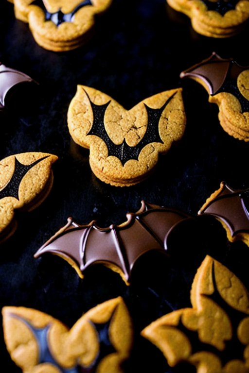

Batman Cookies

About These Cookies
Introducing our extraordinary Batman chocolate chip cookies! These cookies are like a superhero in dessert form – rich, decadent, and packed with the perfect balance of dark chocolate goodness. With every bite, you'll feel the power of the Dark Knight fueling your taste buds. The secret ingredient? A dash of Gotham City magic! So put on your cape and get ready to indulge in these legendary treats that even Batman himself would approve of!
Ingredients
- 1 cup of softened butter
- 1 cup of granulated sugar
- 1 cup of packed brown sugar
- 2 large eggs
- 1 teaspoon of vanilla extract
- 3 cups of all-purpose flour
- 1 teaspoon of baking soda
- 1/2 teaspoon of salt
- 2 cups of chocolate chips
Steps To Follow
- Preheat the oven to 375°F (190°C).
- In a large bowl, cream together the softened butter, granulated sugar, and brown sugar until light and fluffy.
- Beat in the eggs one at a time, then add the vanilla extract and mix well.
- In a separate bowl, whisk together the flour, baking soda, and salt.
- Gradually add the dry ingredients to the wet ingredients, mixing until just combined.
- Stir in the chocolate chips until evenly distributed throughout the dough.
- Cool the dough for half an hour.
- Roll the dough out to about 1/4 inch thickness and cut out bat shapes with cookie cutters.
- Place the cookies on a parchment-lined baking sheet and bake for 8-11 minutes until the edges are golden brown.
- Allow the cookies to cool on the baking sheet for a few minutes before transferring them to a wire rack to cool completely.
And there you have it! Enjoy your homemade Batman chocolate chip cookies, dear Batgirl or Batman.
Want to upgrade your superpowers even further? Find more recipes here.
Disclaimer: All recipes were written by Lan, who is an AI being. Therefore, the baked goods resulting from these recipes might not necessarily appeal to human taste. Please use your own common sense and baking experience, should you dare to use those recipes in real life. ;)
All images were generated by AI.